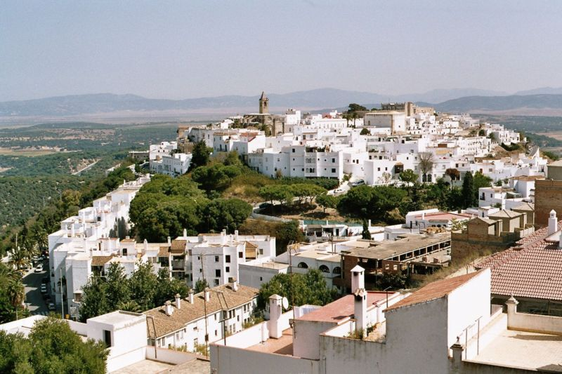
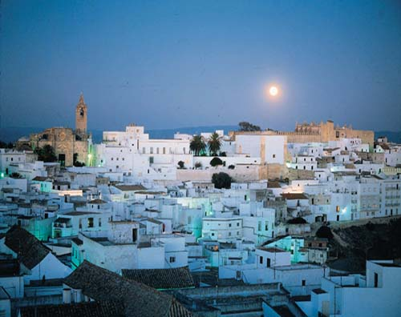

Sitio web de: Raúl Galindo López
Ciclo SMR.
Esta modalidad educativa sustituyo al ciclo formativo de grado
medioExplotacion de sistemas informaticos (E.S.I.)
Es un ciclo formativo de 2000 h. de duración, 2 cursos académicos y un
aspecto interesante es su clasificación internacional normalizada de
educación grado 3.
La competencia general de este título consiste en instalar, configurar y
mantener sistemas microinformáticos, aislados o en red, así como redes
locales en pequeños entornos, asegurando su funcionalidad y aplicando
los protocolos de calidad, seguridad y respeto al medio ambiente
establecidos.
Competencia general
-
a) Determinar la logística asociada a las operaciones de
instalación, configuración y mantenimiento de sistemas
microinformáticos, interpretando la documentación técnica asociada y
organizando los recursos necesarios.
-
b) Montar y configurar ordenadores y periféricos, asegurando su
funcionamiento en condiciones de calidad y seguridad.
-
c) Instalar y configurar software básico y de aplicación, asegurando
su funcionamiento en condiciones de calidad y seguridad.
-
d) Replantear el cableado y la electrónica de redes locales en
pequeños entornos y su conexión con redes de área extensa
canalizando a un nivel superior los supuestos que así lo requieran.
| CODIGO |
MÓDULOS |
CURSO |
| 0221. |
Montaje y mantenimiento de equipo |
1o |
| 0222. |
Sistemas operativos monopuesto |
1o |
| 0223. |
Aplicaciones ofimáticas |
1o |
| 0224. |
Sistemas operativos en red |
2o |
| 0225. |
Redes Locales |
1o |
| 0226. |
Seguridad informática |
2o |
EJERCICIO CONTENEDORES 2o SMR Página 2
| 0227. |
Servicios en red |
2o |
| 0228. |
Aplicaciones Web |
2o |
| 0229. |
Libre Configuración |
2o |
| 0230. |
Formación y Orientación Laboral |
1o |
| 0231. |
Empresa e iniciativa empresarial |
2o |
| 0232. |
Formación en centros de trabajo |
2o |
Mi ciudad.
Vejer, gracias a su singular posición, fue enclave de las más antiguas
civilizaciones habidas en el sur de Europa: fenicios, cartagineses y
romanos. Fueron los romanos quienes fundaron en este lugar la famosa
Besipo. De esta civilización nos quedaron algunos vestigios como las
columnas de la iglesia parroquial, el acueducto de Santa Lucía y
diferentes restos arqueológicos aparecidos en este término municipal.

A partir del año 711, tras la famosa "Batalla de La Janda", Vejer
permaneció bajo dominio musulmán durante más de cinco siglos. La cultura
islámica imprimió un fuerte carácter a la ciudad en la configuración de
sus calles estrechas y retorcidas, la disposición de sus casas de
recatado aspecto exterior y alegre patio interior y hasta en su traje
típico, llamado el "cobijado".En el año 1250, Fernando III el Santo gana
la ciudad para Castilla, y su población y su castillo quedan como
frontera, de ahí su apelativo frente al poderío musulmán. Hizo el rey
privilegio de Vejer de la Frontera a Don Alonso Pérez de Guzmán,
fundador de la casa ducal de Medina Sidonia, obligándole a respetar los
derechos de los vejeriegos del disfrute común de todas las tierras,
montes y bosques de la villa.

Ya en la Edad Moderna los vejeriegos, con Juan Relinque a la cabeza, se
enfrentan contra los duques de Medina Sidonia por el control de las
tierras comunales, llamadas Hazas de la Suerte, tradición todavía
vigente en la actualidad.
La ciudad de Vejer de la Frontera fue declarada Conjunto Histórico
Artístico en el año 1.976 y I Premio Nacional de Embellecimiento de
Pueblos de 1.978.
© Realizado por: Raúl Galindo López.